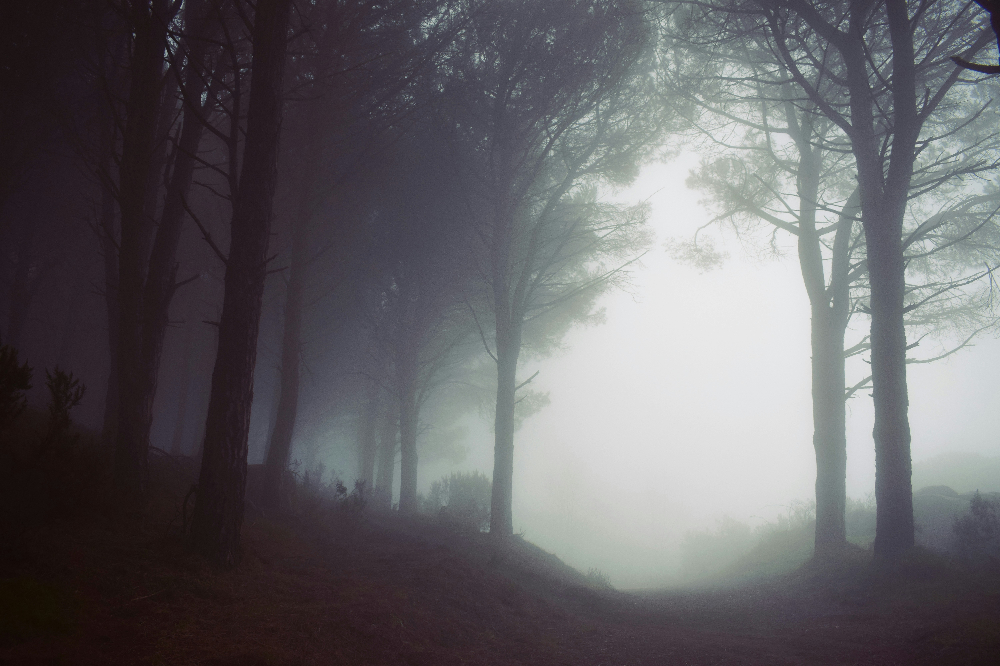

Kort om meg
25 år. Vårbarn. Glad i familie, venner, serier, filmer og trening.
Å utforske skrekkfilmer gleder mest sammen med venner. Spiller gjerne flere runder med kort, yatzy, ulike brettspill og Switch.
Liste over utforskede skrekkfilmer jeg ikke kommer til å se igjen

- Hereditary
- Her kan det være flere som er enig med meg. Visse scener fra filmen, metaforisk, brenner seg fast i hjernen. Trenger ikke se den flere ganger når én gang holder livet ut. Misforstå meg rett; filmen er superb som skrekkfilm. Det er bare mer skrekk enn underholdning for min del.
- Smile
- Her er det nok jeg som kanskje har gått glipp av noen advarsler. God skrekkfilm, men kan ha en triggende effekt på den psykiske helsen.
- Circle
- De to øverste mener jeg funker bra som skrekkfilmer, men denne falt ikke helt i smak hos meg eller min partner i krim som så denne med meg. Filmen var over før noe særlig spennende skjedde.
Liste over OP skrekkfilmer (veldig subjectivt)

- The Nun 2
- Det er noe med denne filmen. Mens den er skummel, så er det også slik at man ikke klarer å ta øynene vekk. Kanskje en kontroversiell mening, men nå er det mange år siden jeg så første filmen, men følte at tilbakeblikkene i andre filmen forklarer det som trengs å forklares for å forstå filmen. Man kan godt se denne uten å se første filmen, man befinner seg kanskje på en kort bærtur, men den forblir kort.
- The Black Phone
- Denne filmen har noen skikkelig ubehagelige scener i seg, men uten om dem, så er denne filmen knall. Den er interessant og man føler at man får lyst å sitte på kanten setet sitt av spenning jo mer filmen progresserer.
- The Shining
- Her kommer det stort bias. Jeg så denne for første gang når jeg var 10, helt alene. Jeg har elsket den siden. Jeg er ikke super glad i hvor lang bilturen er, men resten av filmen gjør opp for det. God oppbygging i løpet av hotelloppholdet og mange ikoniske scener. Hvem har vel ikke hørt om "Here comes Johnny!"? Eller tvillingene i gangen? Heis dørene som åpner seg også kommer det en flod av blod ut? Det er veldig kjekt å få en kontekst på disse scenene.